项目概览
Lovespouse is a remote connection app. In this project, we transformed it from a simple remote controller into a social intimacy platform.
作为v3.1.0~v3.1.5的设计负责人，我主导了核心板块“互控乐园”的体验重构。 针对旧版支付转化率低的问题，我将支付流程从原本的“第三方跳转”优化为“app内原生钱包与信用卡绑定”，极大地降低了交易摩擦，实现了支付闭环。
同时，为了确保多模块的一致性，我从0定义了产品的视觉风格（Visual Identity），主题变量，并搭建了包含色彩体系与核心控件的原子组件库（Design System），为后续的高效迭代奠定了基础。
设计挑战
挑战与痛点
尽管有超过200万的忠实用户对远程控制、多设备连接情侣或异地情侣很认可，但仍存在一些体验以及响应不及时等问题，支付仍存在风险。
核心痛点：工具属性过重，轻社交模式体验不流畅，存在支付风险顾虑。
轻社交转换率低
目前APP设有多个功能转化入口，但CTR（点击率）较低，用户用完工具就走。
商业转化弱
支付入口差异化不明显，缺乏价值感，充值活动不够吸引人。
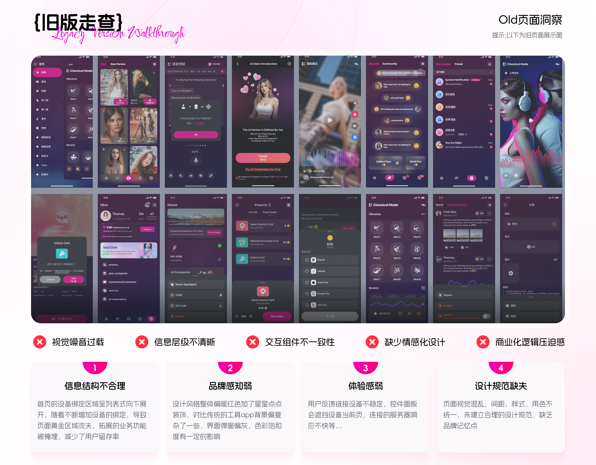
研究&思考
重新定义问题
跳出工具属性，构建“语聊房+随机匹配+私密互动”的三角生态。通过分层满足不同性格用户的社交需求，提升留存。
我们把问题转变为：“如何让远程互动感觉真实且即时？”
体验升级
重构首页链路，将设备管理转向商业转化的路径，优化付费层级与价值感值，提升vip会员转化率。
视觉优化
对页面整体信息架构归并合理布局，优化设计语言、创建规范组件库及变量，提升视觉体验。
建立支付信任
原有的支付功能为跳转到第三方支付方式，应打消用海外用户对支付风险的顾虑，建立透明和信任感。

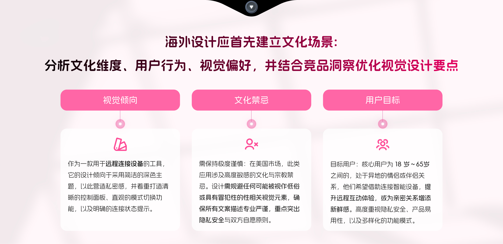
通过对竞品的分析，和小组同学确定了以下设计方向：

设计方案
设计一种既能提供情感连接
又能确保商业转化的沉浸式体验。
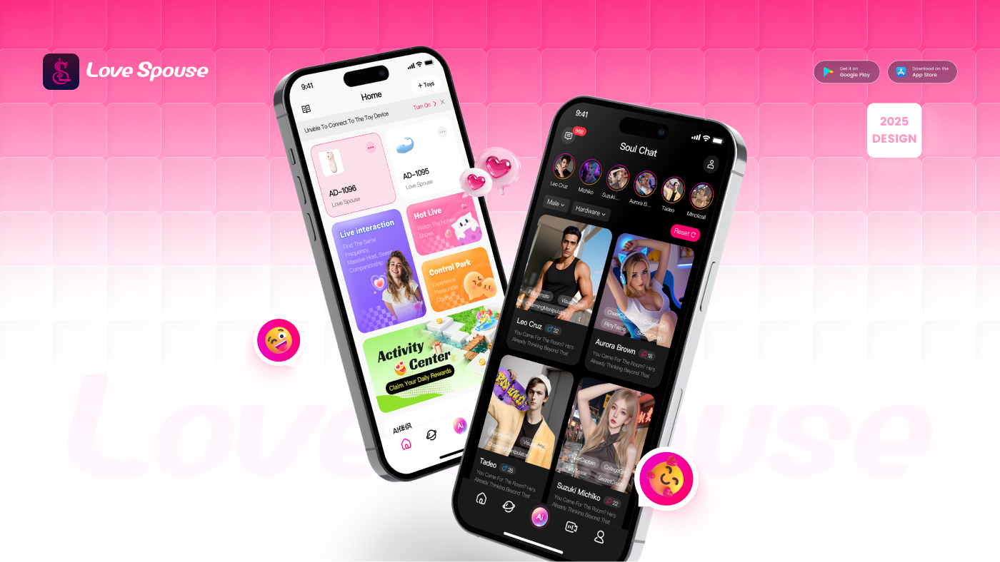

根据主色调（将原本的玫红色主色改成玫红色到紫色的渐变，增加轻社交氛围），通过梳理业务的框架，按照优先级设计以下内容：
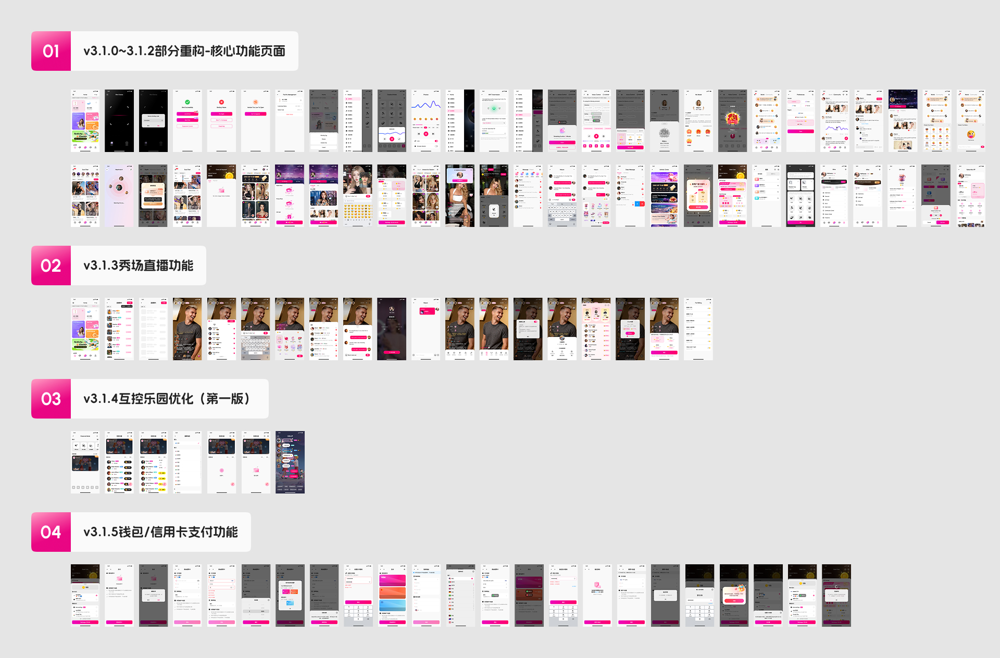
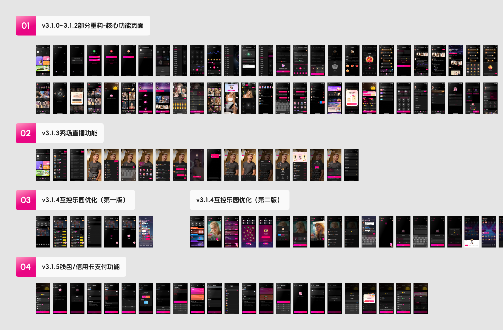
01. 首页重构 (Homepage Redesign)
体验重构：空间与连接 — 重构首屏，平衡工具与社交。
将原本冗长的设备列表折叠为“卡片流”，释放了 40% 的首屏空间给社交入口。引入 Dark/Light Mode，适应用户深夜使用的场景习惯。

02. 金币充值页优化(Redesign)

03. 试用vip页面设计
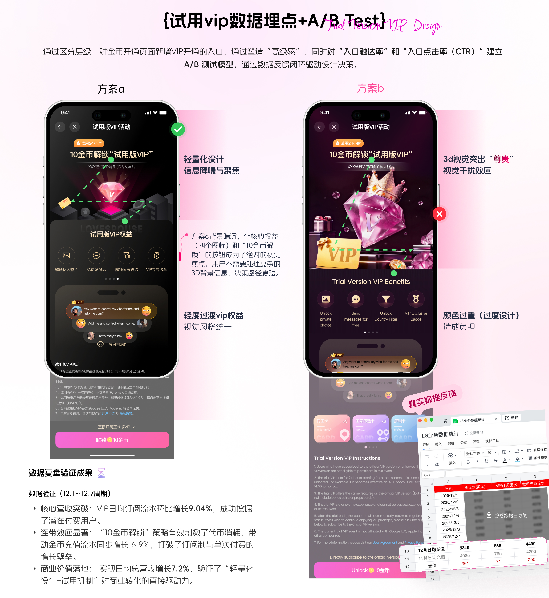
04. 互控乐园优化方案
项目初期，根据业务数据显示，互控乐园的点击率极低（平均15个人里面只有3个人会点击），因此我们对互控乐园现有的版本进行了第一次优化评审：
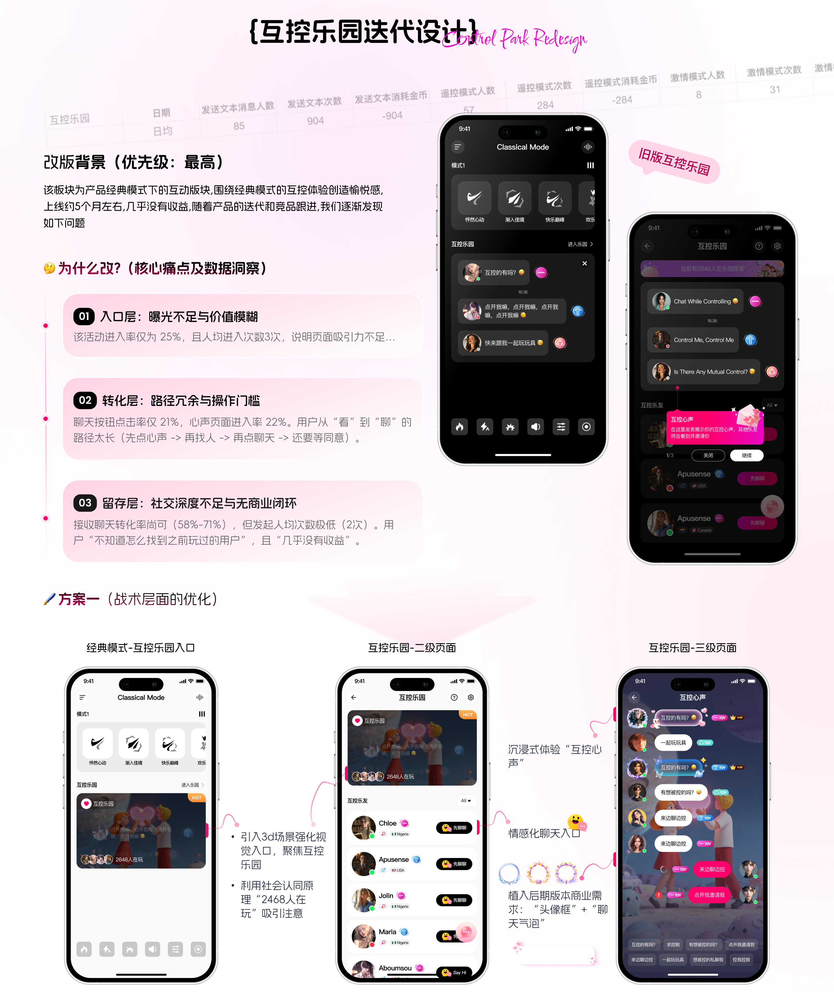
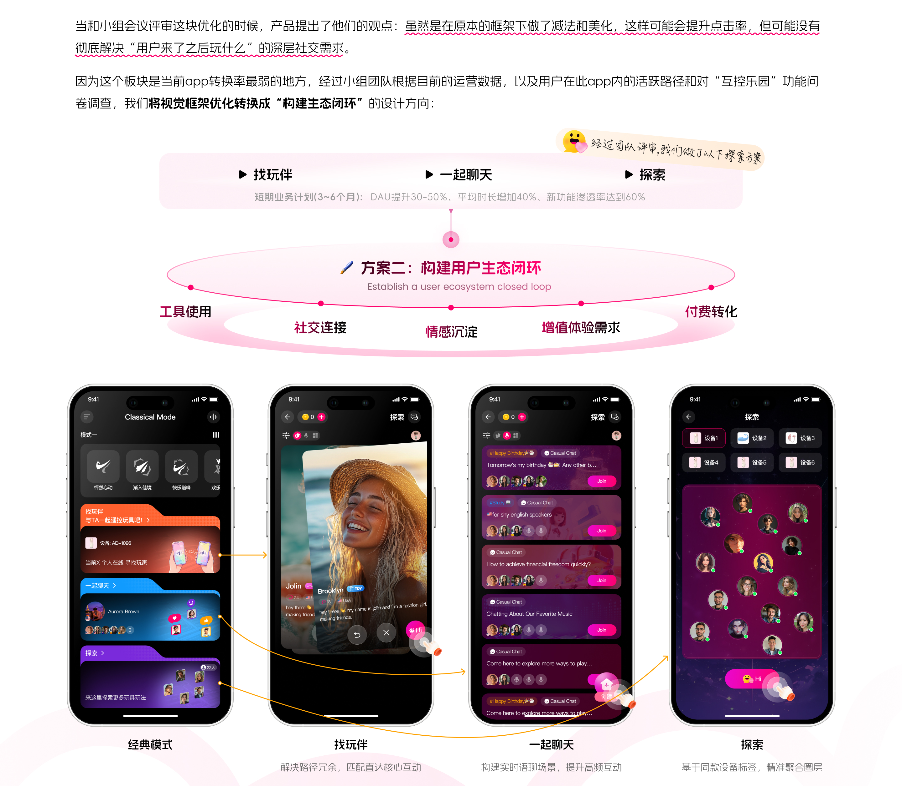
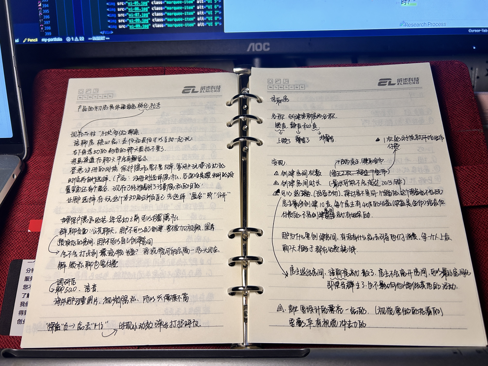
为验证生态闭环的有效性，我们在开发前进行了灰度测试（Gray-box Testing），随机抽取了 50 名活跃用户对三类核心场景进行体验反馈。

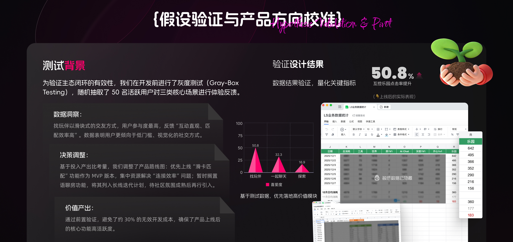
05. 支付与信任
商业增长：无摩擦支付 — 优化付费路径并建立信任。
在海外市场，信任是付费的基础。我们将跳出式支付改为 In-App Wallet，并增加安全背书。优化后，支付流失率降低30%。

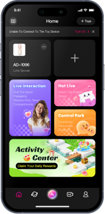
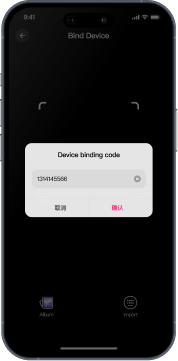
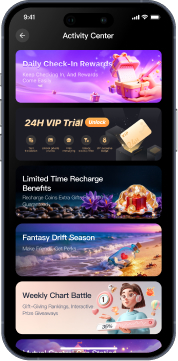
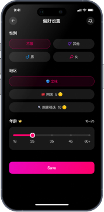
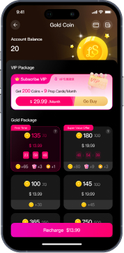
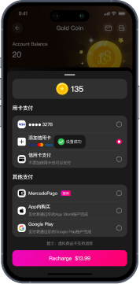
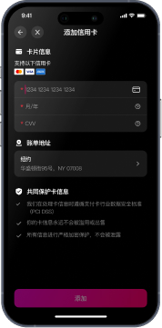
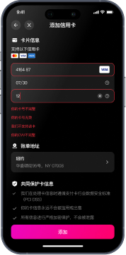
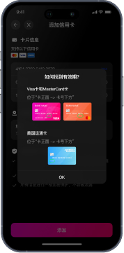
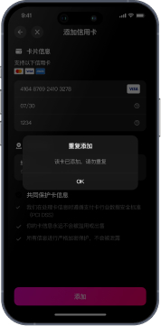
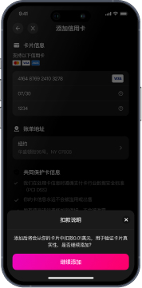
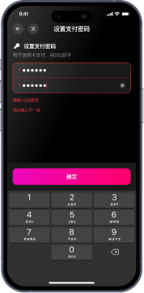
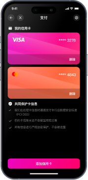
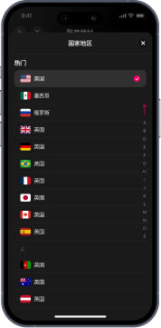
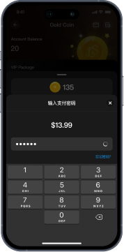
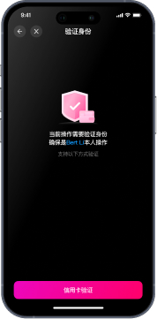
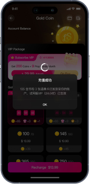
06. 运营赋能 (Efficiency & AIGC)
利用 AI 工具生成运营素材，将设计产出效率提升 320%，支撑了高频的全球化运营活动。
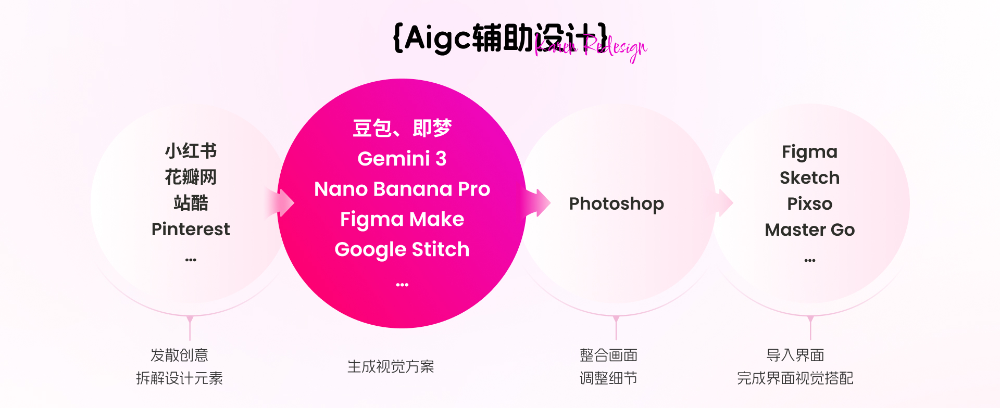

Results 结果与心得
以下是一些值得总结的经验教训。 延续到未来的项目中
• 从“体验设计”到“增长设计”:
这次改版最大的突破，不再局限于界面的美化，而是利用 A/B 测试思维 和 MVP 验证模型，将设计决策与业务指标（点击率、开发成本）深度绑定。设计不再是装饰，而是驱动数据增长的引擎。
• 学会“做减法”:
数据验证让我们果断放弃了低效的“语音房”功能，节省了约 30% 的研发资源。这让我深刻理解到：高级设计师的价值不仅在于创造功能，更在于通过洞察用户真实意图，避免产品的盲目堆砌。
• 全球化社交的尺度:
在处理海外用户的社交链路时，我意识到“信任建立”比“功能丰富”更重要。未来我将继续探索如何在跨文化语境下，通过更细腻的情感化设计 降低社交压力，提升用户的生命周期价值。